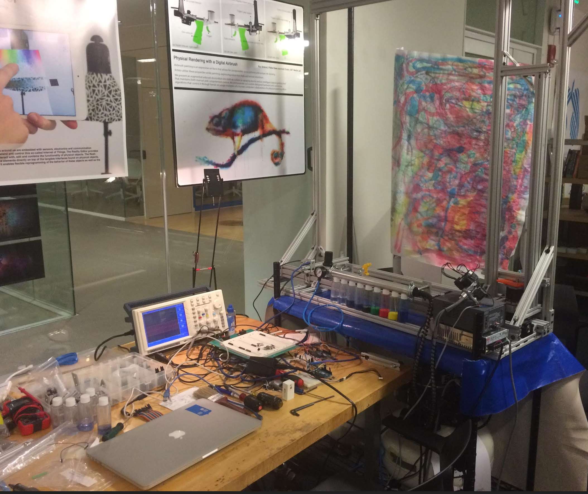

Universal Expression in New Paint
Project
We are developing a new and exciting tool for expression in paint. Combining technology and art to bring together the physical and the virtual through the use of robotics, artificial intelligence, signal processing, and wearable technology.

Engagement
The norm seems to be disregard and disbelief in the ability to transcend limited motor skills. We believe in no limititations. We seek to promote the idea that the presumed limitations associated with disabilities are creating disabilities rather than addressing it, and that sufficiently advanced technology can mitigate any disability.
Our technology promotes expression in paint not only by making it accessible, but also by making it flexible, adaptive, and fun. Not only to people with disabilities, but for everyone.
With the development of the technology also emerge new forms of art, such as hyper, hybrid, and collaborative painting.
Hyper-painting: Enabling a user to involve their whole body in the painting process, by controlling aspects of the brush with biosignals, Similar to Hyperinstruments. Applicable both to established artists to enhance their work as well as novices who wish to engage in this novel form of painting.
Hybrid-painting: Enabling control of some (or all) of the dimensions of the output by artists while performing other forms of art. For example, two dancers can be creating a painting by attaching IMUs to their bodies and configuring the system such that one’s motion controls the position of the brush on the canvas and the others’ the color and intensity of the paint.
Collaborative Painting: Co-authoring a painting is currently a complicated and rare practice. Tunisian Collaborative Painting solves this complexity by imposing a set of rules which allow for actual practice, but in turn adds many limitations on the process. Using our tool, artists can virtually hold the same brush together and either share control or control different dimensions.
All of these practices can be extended to remote operation (or co-operation) thanks to the modular system design. For example, a parent and a child can be painting together even when far apart.Team
Benjamin Tritt - Artist, Entrepreneur
Tal Achituv - Human Computer Interaction Researcher at MIT Media Lab
Cristina Powell - Artist
Technology
The technology builds upon Human-Computer Interaction research done at MIT's Media Lab. The robotic airbrush we developed allows computer control over air pressure, paint pressure, color, and position.
The entire system, from mechanics to software, is designed to allow maximum flexibility and universal accessibility.